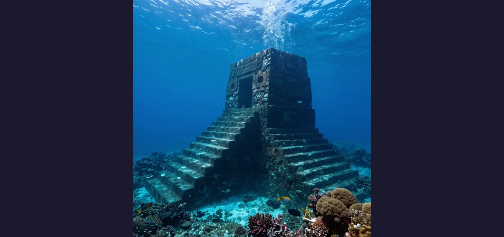

The Yonaguni Monument: Japan's Underwater Mystery

In 1986, a local dive tour operator named Kihachiro Aratake plunged into the warm waters off the southern coast of Yonaguni Island, the westernmost inhabited island of Japan, searching for a new vantage point to observe the hammerhead sharks that flock to the area each winter. What he found instead would spark one of the most heated debates in modern archaeology. Lying beneath approximately 25 meters of turquoise water, stretched across the seafloor like the skeleton of a colossal ancient building, was a massive stone formation featuring flat terraces, near-vertical walls, sharp right angles, and what appeared to be a broad, perfectly level pathway running along its base. Aratake had discovered what the world would come to know as the Yonaguni Monument — a submerged rock structure so geometric, so angular, and so unlike anything else on the ocean floor that it has divided geologists, archaeologists, and alternative researchers for nearly four decades.
The Yonaguni Monument, also called the Yonaguni Submarine Ruins, is located in the Philippine Sea, approximately 100 meters off the southern coast of Yonaguni, the southernmost of Japan’s Ryukyu Islands. Yonaguni itself is closer to Taiwan (about 108 kilometers away) than to the main Japanese islands, and its population of roughly 1,700 people has inhabited the island for at least two thousand years. The monument’s main formation measures approximately 150 meters long by 40 meters wide, with its highest point resting just 5 meters below the surface and its base descending to a depth of about 40 meters. The rock is composed of fine-grained sandstone and mudstone belonging to the Yaeyama Group, a geological formation dating to the Early Miocene epoch, approximately 20 million years ago. The debate that has consumed researchers since Aratake’s discovery boils down to a single question: are the monument’s remarkably regular features the work of human hands, or the product of natural geological processes?
The main formation at Yonaguni exhibits a collection of features that, to many observers, look less like natural geology and more like the remains of an enormous stepped platform or pyramid. The most striking include a large, apparently flat upper terrace measuring roughly 100 meters in length; a series of stepped formations descending in regular increments of one to two meters, resembling a massive staircase; near-vertical walls rising up to 10 meters from the seafloor, meeting at angles of approximately 90 degrees; and a broad, flat pathway — often called “The Road” — running along the base of the main structure, measuring about 5 meters wide and appearing remarkably uniform in width for a considerable distance. Additional features include what some observers have described as a “stone circle”, a “twin megalith”, and various smaller platforms and ledges that proponents of the artificial theory argue are too regular and too numerous to be purely natural. The visual impression is undeniably striking: photographs and video footage taken by divers show massive angular formations rising from the sandy seafloor, their flat surfaces and sharp edges casting dramatic shadows in the filtered sunlight.
The most compelling argument for the artificial origin of the Yonaguni Monument hinges on sea level. During the Last Glacial Maximum, approximately 20,000 years ago, global sea levels were between 120 and 130 meters lower than they are today. The formation now lies at depths of 5 to 40 meters — meaning that during the last Ice Age, it would have been completely above water, standing on dry land as part of a land bridge connecting what are now the Ryukyu Islands to the Asian mainland. If the monument is artificial, it would have been built before sea levels rose at the end of the last Ice Age, approximately 10,000 to 8,000 years ago, making it one of the oldest known monumental structures on Earth — older than Göbekli Tepe, older than the oldest known cities, older than the dawn of what conventional archaeology considers civilization.
The two most prominent voices in the Yonaguni debate represent opposing poles of the controversy. On one side stands Dr. Masaaki Kimura, a Japanese marine geologist at the University of the Ryukyus who has spent over two decades studying the monument and is its most vigorous proponent as an artificial structure. On the other stands Dr. Robert Schoch, an American geologist at Boston University best known for his controversial redating of the Great Sphinx of Giza, who has dived at Yonaguni and argues forcefully that the formation is entirely natural. Kimura’s position has evolved over the years. Initially cautious, he has become increasingly convinced that the monument shows evidence of human modification. He points to several features that he argues are inconsistent with purely natural formation: the uniform width of “The Road,” the apparent right angles where walls meet, the presence of what he interprets as tool marks on certain surfaces, and the existence of smaller surrounding formations that he believes form a coherent architectural complex. Kimura has proposed that the monument may have been a castle, temple, or ceremonial center belonging to an ancient civilization — possibly the Jōmon people, the prehistoric culture that inhabited Japan from approximately 14,000 BCE to 300 BCE and is known for its elaborate pottery and some of the earliest evidence of settled village life in East Asia.
Schoch, who first dived at Yonaguni in 1997, offers a very different interpretation. He acknowledges that the formation is visually impressive and that its features are striking, but he argues that every aspect of the monument can be explained by the natural properties of the rock. The sandstone and mudstone of the Yaeyama Group are sedimentary rocks that naturally fracture along joint planes — pre-existing lines of weakness in the rock that produce flat surfaces and right angles when the rock breaks. The region is also tectonically active, and earthquakes are a powerful natural force for fracturing rock along these planes. Schoch argues that the stepped terraces are consistent with the natural layering of sedimentary strata, that the vertical walls are the result of jointing, and that “The Road” is a natural platform created by differential erosion along a particularly resistant layer of rock. He notes that similar formations, with similar apparent regularity, can be found on land in many locations around the world — the famous Giant’s Causeway in Northern Ireland being one example of natural geology producing remarkably geometric features.
It is worth noting that neither the Japanese Agency for Cultural Affairs nor the government of Okinawa Prefecture recognize the Yonaguni Monument as an important cultural artifact. Neither government agency has carried out research or preservation work on the site. The formation is not listed as a cultural property, no archaeological excavation has been officially sanctioned, and no peer-reviewed archaeological journal has published evidence supporting the artificial theory. The mainstream archaeological community overwhelmingly considers the monument to be a natural geological formation, and the claims of artificial origin have been described as pseudoarchaeological by multiple scholars. Some proponents of the artificial theory have connected the Yonaguni Monument to the legend of Mu (or Lemuria), a hypothetical lost continent in the Pacific first proposed in the nineteenth century. However, the Mu hypothesis has no support in mainstream geology or archaeology, and plate tectonics has thoroughly debunked the concept of a lost Pacific continent.
The Yonaguni Monument matters not because it is likely to rewrite history — mainstream science is clear that it is a natural formation — but because it exposes the deepest tensions in how we study the past. The possibility, however remote, that an unknown civilization flourished on now-submerged coastlines before the end of the last Ice Age is one of the most tantalizing questions in archaeology. The coastal settlement theory — the idea that early human settlements were concentrated along coastlines that are now underwater — is widely accepted by archaeologists. Rising sea levels at the end of the last Ice Age inundated millions of square kilometers of what was once dry, habitable land. Some of humanity’s earliest communities may now lie beneath the ocean, inaccessible to conventional archaeology and largely unmapped. The Yonaguni debate highlights the extraordinary difficulty of underwater archaeological investigation. Unlike land sites, where careful excavation can reveal layers of occupation, construction techniques, and cultural artifacts, underwater sites are accessed only through diving — a physically demanding, time-limited activity that allows for observation and limited sampling but not systematic excavation.
The Yonaguni Monument sits at the boundary between what we know and what we wish were true. It is a formation of undeniable visual power — a massive, angular, terraced structure lying on the ocean floor in one of the most tectonically active regions on Earth. To look at it is to want it to be artificial. To study it as a geologist is to recognize that nature, given enough time and the right kind of rock, can produce features that look uncannily like architecture. The mainstream scientific consensus is clear: the Yonaguni Monument is a natural geological formation, produced by the fracturing of sedimentary rock along joint planes, enhanced by millions of years of erosion and tectonic activity. No artifacts, no tools, no pottery, no bones, no inscriptions — none of the evidence that would accompany a genuine archaeological site — have ever been found at or near the monument. But the formation has served a valuable purpose even if it is natural: it has drawn attention to the vast, submerged landscapes that were exposed during the last Ice Age and that may contain genuine archaeological treasures yet to be discovered. Sometimes the most important discoveries are not the ones that confirm our theories, but the ones that remind us how much we have yet to learn.
References & Further Reading
Wikipedia: Yonaguni Monument — Overview of the discovery, geology, and natural formation debate
Wikipedia: Yonaguni — The westernmost inhabited island of Japan, geographic and historical context
Wikipedia: Robert Schoch — Geologist who argues the Yonaguni formation is natural
Wikipedia: Jomon Period — The prehistoric Japanese culture proposed by Kimura as potential builders
📚 Recommended Reading: Underworld: Flooded Kingdoms of the Ice Age by Graham Hancock (on Amazon) — As an Amazon Associate, we earn from qualifying purchases.
Editorial note: geological and archaeological interpretations of the Yonaguni Monument continue to evolve as new research emerges. See our Editorial Policy.